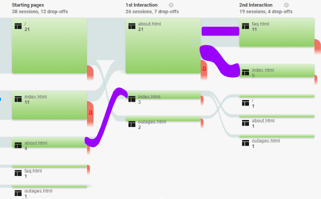

This assignment asked the team to collect website usage data and develop a dashboard to present useful information for various uses. The project took place over a course of two weeks and involved researching and implementing tools into a website to collect data, and then construct a data report to use the information to suggest improvements to the website.
Through the course of this project I learned to use Google Analytics as well as Google Data Studio. I also learned to work with data and determine what information is helpful and what is not.
From this data we were able to discern that it was impossible to reach the Outages page from the About page (bottom of figure 1, figure 2). We also found that the majority of our visitors were using Google Chrome on desktop, with a small percentage using other browsers or mobile. All Visitors were from one location in Virginia.